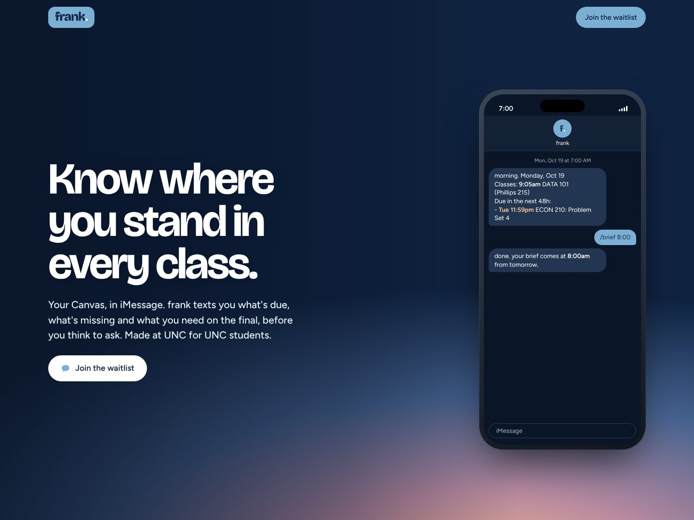

Kartavya Hirani
Welcome, I’m glad you found your way here. Maybe you came looking for something specific, or maybe you just wandered in. Either way, I hope you leave with something that stays with you.
- Elsewhere
- Email ↗
- LinkedIn ↗
- GitHub ↗
-
 01_EMBER.JPG Ember 2026 A fire-safety dashboard and adversarial simulator for Moon and Mars habitats, built on NASA ISS combustion data. Built with a team for the NASA Space Apps Challenge 2026; I wrote the Red, Blue and Ghost Flame agents and the 3D habitat and planet. Live site ↗
01_EMBER.JPG Ember 2026 A fire-safety dashboard and adversarial simulator for Moon and Mars habitats, built on NASA ISS combustion data. Built with a team for the NASA Space Apps Challenge 2026; I wrote the Red, Blue and Ghost Flame agents and the 3D habitat and planet. Live site ↗ -

02_FRANK.JPG Frank 2026 A study assistant for UNC students that you text. It reads your Canvas and answers what’s due, what you need on the final and what the syllabus says, and texts you before deadlines. Website ↗
-
No. 011984 George Orwell19841949George Orwell
-
No. 02Bhagavad Gita VyasaBhagavad GitaSanskritVyasa
-
012026Spider-Man: Brand New DayDir. Destin Daniel CrettonSpider-Man: Brand New Day2026Destin Daniel Cretton
-
022012The Hunger GamesDir. Gary RossThe Hunger Games2012Gary Ross
- 2025.11 The Value of Curiosity Most people chase answers, but curiosity is about finding better questions. Sometimes the process of wondering is the point.
- 2025.10 Why I Like Building Things Making something from scratch is a kind of clarity — it forces you to translate thought into form. That’s why I keep building.